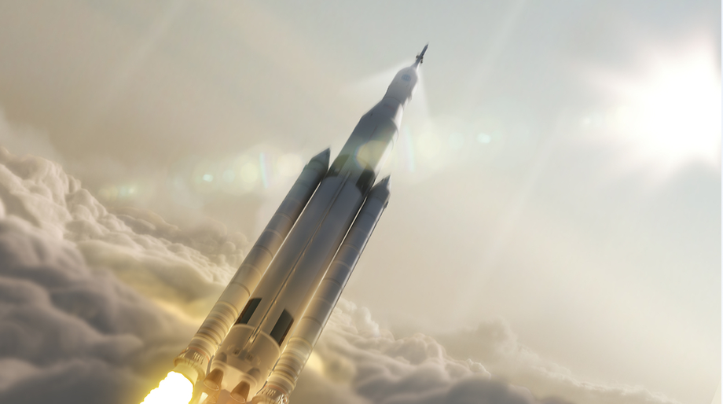
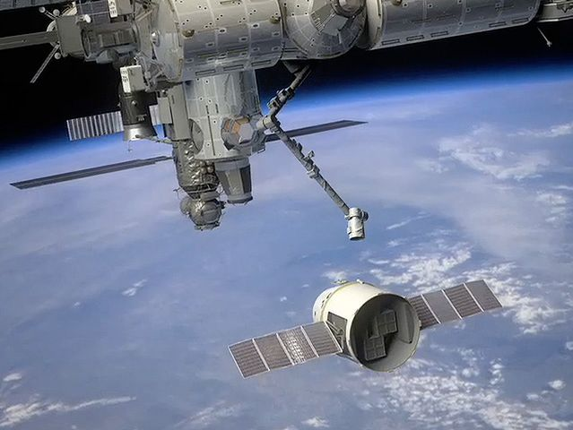

Hej! Witaj na stronie poświęconej lotom w kosmos
Loty w kosmos to jedna z najbardziej spektakularnych form eksploracji, jaką kiedykolwiek podjęła ludzkość. To nie tylko podróże ludzi lub urządzeń poza atmosferę Ziemi, ale także przełomowe osiągnięcia nauki, inżynierii i współpracy międzynarodowej. Loty te mogą mieć różne cele: od badań naukowych, przez rozwój nowych technologii, po eksplorację planet i innych ciał niebieskich. Współczesne misje kosmiczne dzielą się na dwie główne kategorie: misje załogowe, w których biorą udział astronauci, oraz misje bezzałogowe, realizowane przez automatyczne sondy i satelity.  Pierwszym człowiekiem, który przekroczył granicę naszej atmosfery i znalazł się w przestrzeni kosmicznej, był Jurij Gagarin, radziecki kosmonauta. W 1961 roku, na pokładzie statku kosmicznego Wostok 1, Gagarin okrążył Ziemię i powrócił bezpiecznie na powierzchnię. Jego lot trwał 108 minut, jednak znaczenie tego wydarzenia jest nie do przecenienia – rozpoczęło ono nową erę w dziejach ludzkości, której celem stała się eksploracja kosmosu. Od czasu misji Gagarina technologia lotów kosmicznych uległa ogromnym zmianom. Początkowo celem było jedynie wyniesienie człowieka w kosmos i jego powrót na Ziemię. Z czasem jednak ludzkość zaczęła dążyć do bardziej ambitnych celów, takich jak lądowanie na Księżycu, czego dokonała NASA podczas misji Apollo 11 w 1969 roku, czy budowa Międzynarodowej Stacji Kosmicznej (ISS), która umożliwiła długoterminowe badania w warunkach mikrograwitacji.Współczesne misje kosmiczne, takie jak eksploracja Marsa, są realizowane nie tylko przez państwowe agencje kosmiczne, takie jak NASA czy ESA, ale także przez prywatne firmy, takie jak SpaceX. Loty bezzałogowe, dzięki nowoczesnym sondom i łazikom, pozwalają nam badać odległe planety i ich księżyce, analizować składy atmosferyczne, a także szukać śladów życia pozaziemskiego. Na przykład misje Mars Exploration Rovers, w ramach których łaziki Spirit i Opportunity odkrywały powierzchnię Czerwonej Planety, dostarczyły ludzkości cennych informacji o marsjańskiej geologii i potencjalnej historii wody na planecie.Podstawowe Pojęcia
Podstawowe pojęcia związane z lotami kosmicznymi są kluczowe, aby zrozumieć, jak działa współczesna eksploracja kosmosu. Każde z tych terminów dotyczy istotnych aspektów technologii kosmicznych, załogowych i bezzałogowych misji, a także samej struktury przestrzeni kosmicznej. Oto kilka najważniejszych pojęć, które warto znać:
Astronauta to osoba przeszkolona do odbywania lotów kosmicznych. Zwykle są to piloci wojskowi lub naukowcy, którzy przechodzą intensywne szkolenia fizyczne i psychologiczne, aby poradzić sobie z warunkami panującymi w przestrzeni kosmicznej.
Rakieta to statek kosmiczny napędzany silnikiem rakietowym, który umożliwia osiągnięcie prędkości potrzebnej do opuszczenia atmosfery Ziemi.